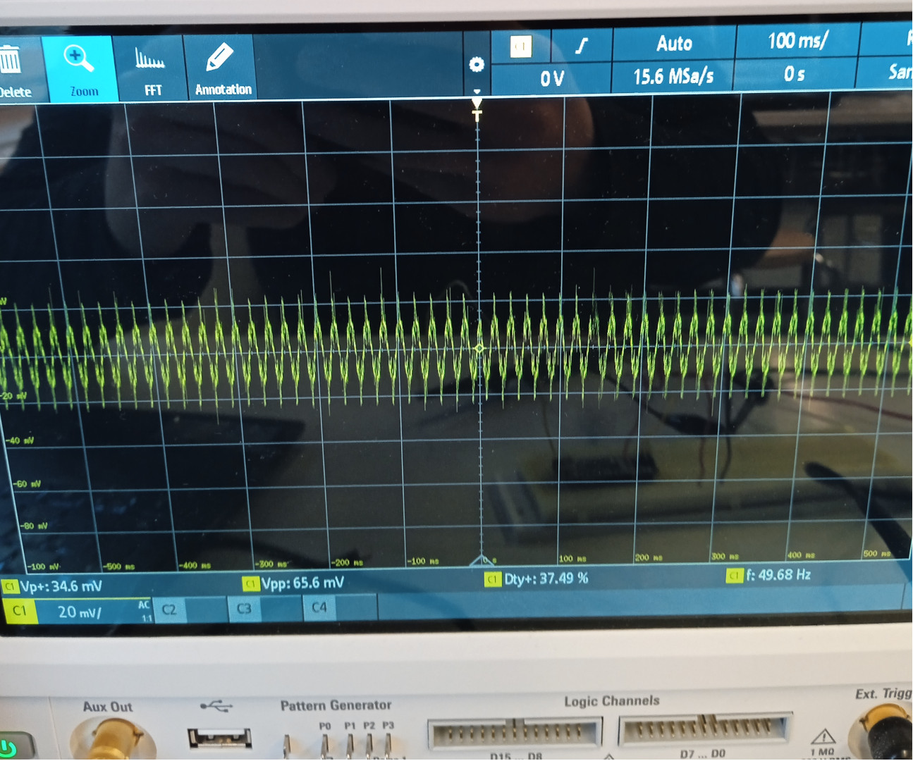

This is my first web page, where I'll talk about the wonders of engineering, sushi, League of Legends and sauna.

This here is my first ever attempt at reading an oscilloscope.
Did you know that the first mention of sushi was from 1700 years ago? It has a rich history, but it was only eaten in Japan until the late 1900s. Now you can find sushi restaurants all over the world, including in Tampere. Here's a large order made by yours truly.
I've played League of Legends for quite a long while - long and well enough that people ask me to teach them how to play the game
>
Sauna is one of the most relaxing places you can find in the world. Try it yourself